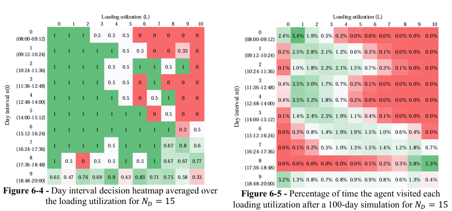

← Back to projects
Project 01 — Reinforcement Learning
Completed
Optimizing operation decision-making through Reinforcement Learning.
Designed a reinforcement learning algorithm that learned optimal web-shop decision making based on routing and warehousing status.

Role
Operations and Warehouse Intern
Organisation
Flaschenpost
Münster · Germany · Company project
Timeline
2024
Stack
Python, Julia, Git & GitHub
Domain
Reinforcement learning · Operations decision-making
Key highlights
- Formulated the web-shop decision problem as a reinforcement learning task, with the agent taking decisions based in the current routing and warehousing state.
- Built the learning environment and training loop in mainly in Python and Julia.
- Experimented with different learning agent configurations, decision-making policies, and case scenarios. It was studied the diferent agent configurations, to extract conclusions and recommendations to the company.